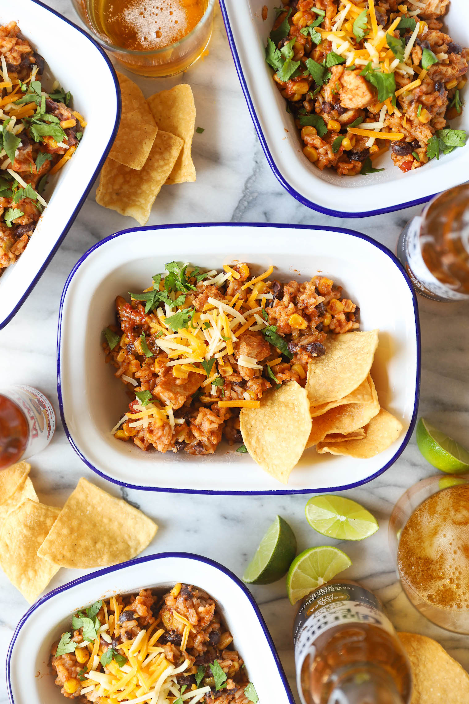

Instant pot burrito bowl

This chicken burrito bowl has been a great addition to dinner rotation, where you just simply add the ingredients to the instant pot and cook! This is not my recipe, and it can be found here. However, I'll quickly list the ingredients and directions down below.
Ingredients:
- 1 lb skinless, boneless, chicken breast
- 1 can of black beans
- 1 can of corn
- 1 small can of diced green chiles
- 1 cup chicken broth
- 1 cup white rice (I use instant rice)
- 1 cup of salsa (I use store bought)
- 1 packet of taco seasoning
- 1 cup shredded cheese of choice (I use mexican blend)
Directions:
- Dice chicken into bite size pieces. Combine chicken, seasoning, and chicken broth in instant pot and stir
- Drain and wash black beans. Add to instant pot. Drain and add corn and diced green chiles
- Add salsa to instant pot and stir to combine. Without stirring, add rice on top
- Add and lock instant pot lid and set manual pressure to high, and cook for 10 minutes
- Once cook cycle is completed, carefully vent and remove lid. Stir in cheese and serve
Return to Homepage